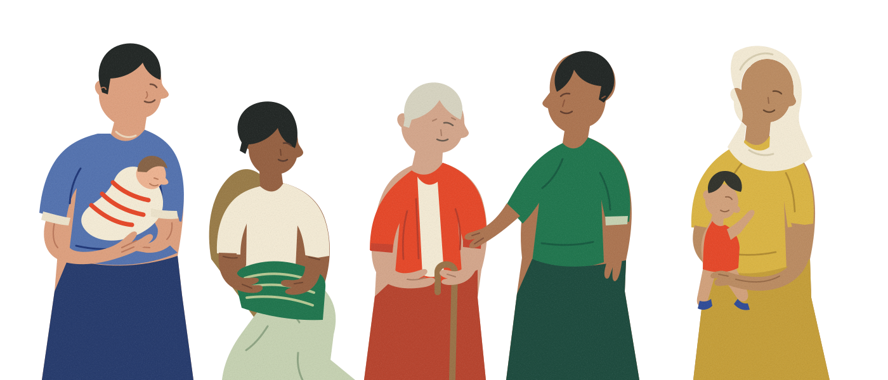

A new recipe for learning
COOK✳
Augmented Reality Culinary
Education at Home
Made with care by
Elizabeth Ahn · Brendan Giang · Alana McCareins
Gabrielle Tiu · Leanne Wang
The heart of our story✳
Meet Sara.
A full heart. A very full plate.
- 0129 years old
- 02New mother
- 03Passionate about cooking
- 04Wants healthier meals at home
- 05Busy with work, childcare, and
household responsibilities
Her passion never disappeared.
Healthier meals for her family.


+36% Dining-out costs since 2019

Thousands in tuition

Long commutes

Hours in class
Childcare
Why should becoming a parent mean giving up on an education you're passionate about?
Sara isn't alone.
50%Childcare or caregiving: a barrier to further education
70%Remote-learning limitations and in-person attendance requirements

World-class culinary education

Limited accessibility
What if culinary school could come to your home?
COOK
Your kitchen. Your culinary school.
Professional culinary education, powered by AR and AI.
Structured Culinary Curriculum